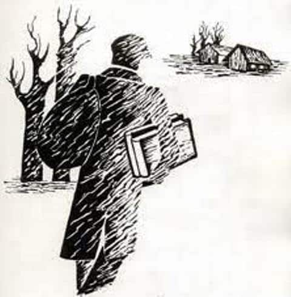

Šioje svetainėje sužinosite apie knygnešius – drąsius žmones, kurie slapta nešė lietuviškas knygas, kad mūsų kalba neišnyktų. Seniau buvo laikai, kai lietuviškos knygos buvo draudžiamos, o skaityti ir rašyti gimtąja kalba buvo labai sunku. Bet knygnešiai nepabijojo pavojų ir slapčia gabeno knygas iš užsienio, kad visi galėtų mokytis ir skaityti lietuviškai.
Čia rasite daug įdomių pasakojimų apie jų gyvenimą, sužinosite, kaip jie slėpė knygas, kurias vietas rinkosi ir kokius gudrius būdus sugalvojo, kad išvengtų sargybinių. Taip pat galėsite pasitikrinti savo žinias smagiose užduotyse!
Leiskitės į kelionę po knygnešių pasaulį ir atraskite, kaip jie padėjo išsaugoti mūsų kalbą!
Tikiuosi, kad Jums patiks!